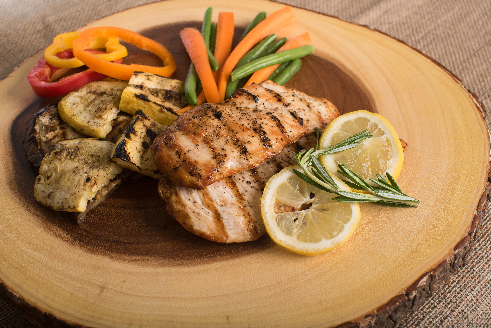
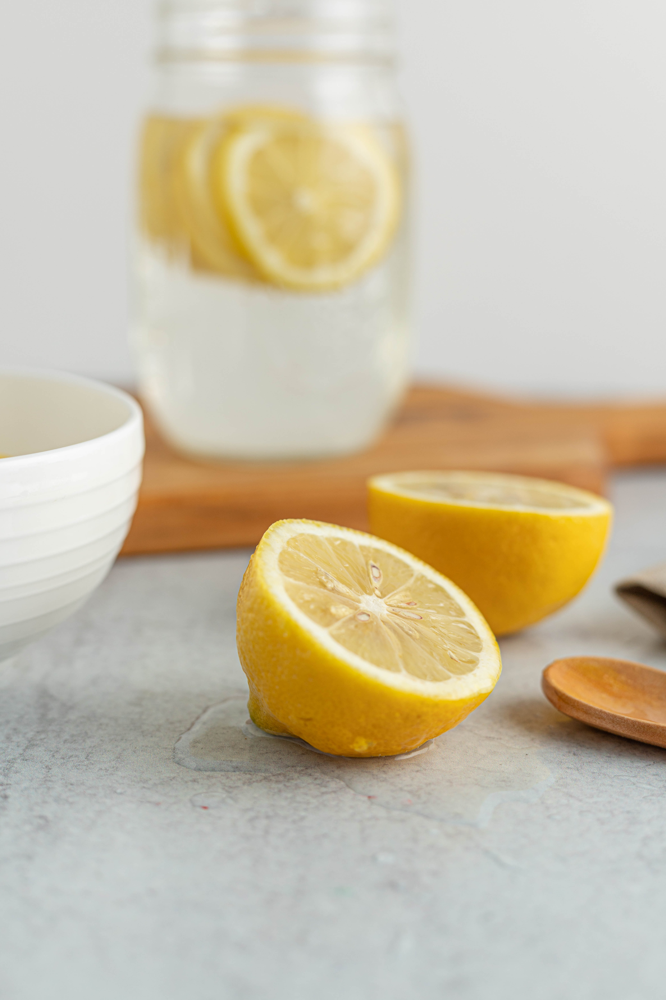
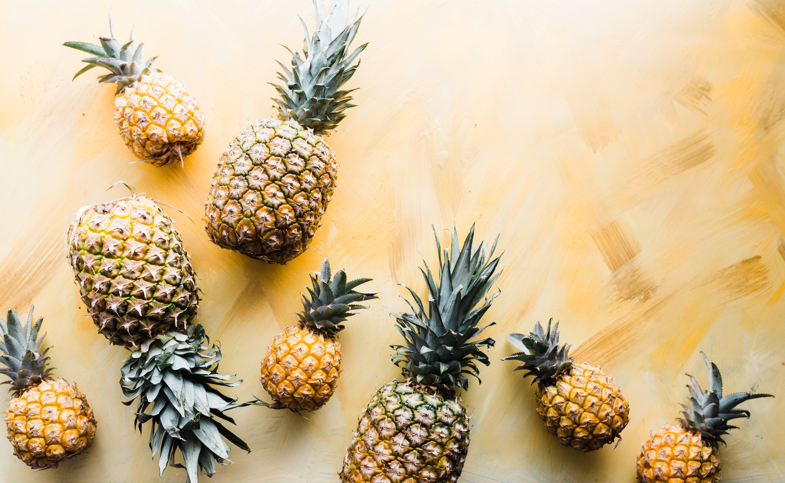
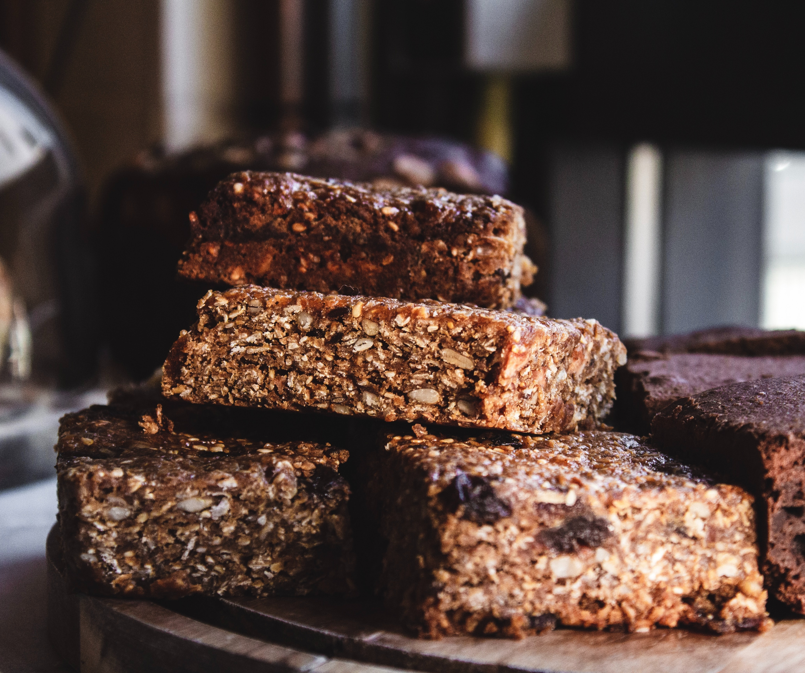

Schmackhafte
Lieblingsrezepte

Hähnchenbrustfilet abspülen, trocken tupfen und in Streifen schneiden. 1 TL Zitrone abreiben und Zitrone auspressen. Für die Marinade Knoblauch pressen und mit Zitronensaft, -schale und 1/2 TL Salz verrühren. Marinade und Hähnchenbruststreifen in einen Gefrierbeutel geben, gut verkneten und im Kühlschrank ca. 30 Minuten marinieren. Zucchini waschen. Kartoffeln schälen und mit Zucchini würfeln. Oliven in Ringe schneiden.
...


Nimm ein EL Kokosöl und gebe es in einen Wok (oder Pfanne) den du bei brutaler Hitze auf deinem Herd hast, böller deine Eier rein und gib ihnen so lange bis sie halb fest sind, pack sie anschließend auf einen Teller.
...
Heize den Ofen auf 175°C vor. Als nächstes 150g Zartbitterschokolade mit der Butter in einem Topf schmelzen lassen. Vermische braunen Zucker und Vanillezucker und schlag sie mit den Eiern schaumig.
...
